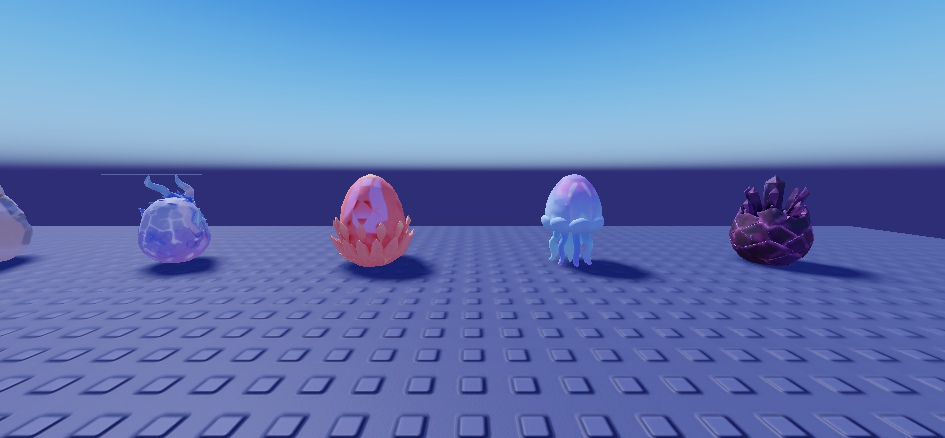
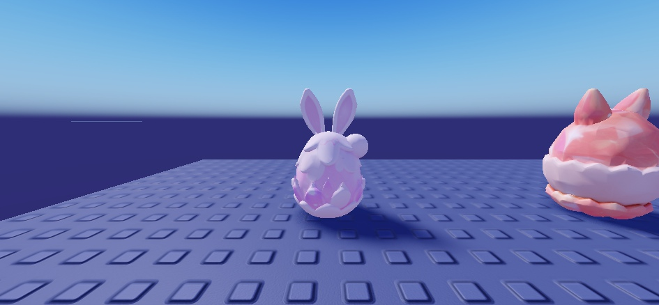
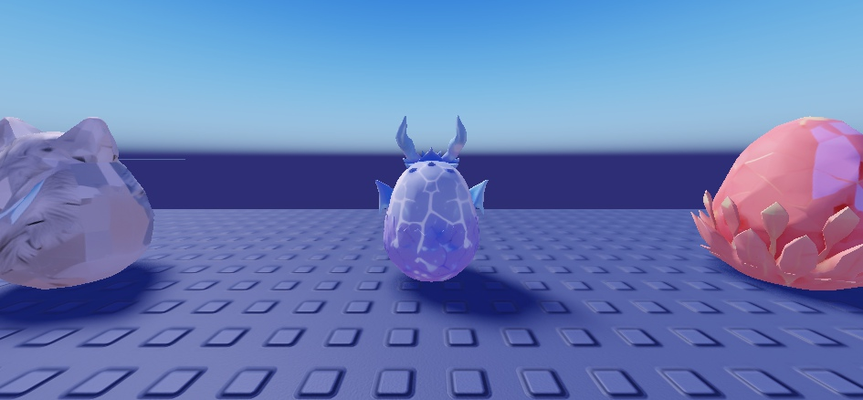
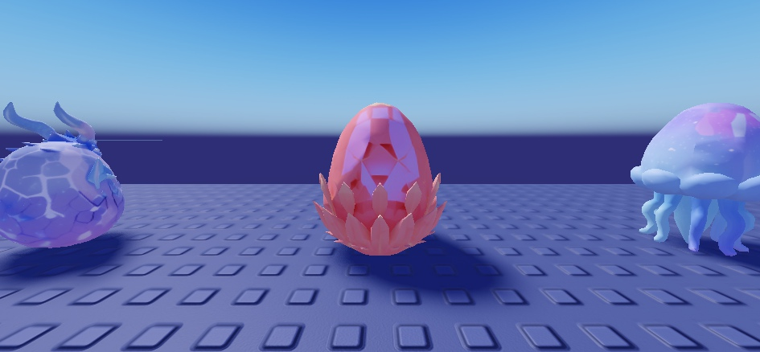
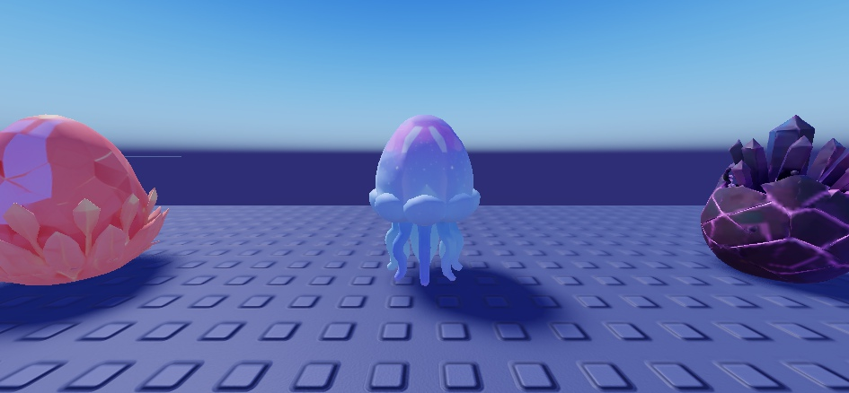

Un œuf généré en 3D pour chaque espèce : base d'œuf en cristal taillé (le style du Prisme Suprême que tu as aimé), aux couleurs de l'espèce, avec de petits détails qui la rappellent, et aucun visage. Vus de près dans Studio. Sur chaque photo, l'œuf de l'espèce est celui du milieu.

De loin : Dragonnet, Phénix, Méduse, et à droite l'œuf du Prisme Suprême (référence de style).

Lapin (Commun) : grandes oreilles, pompon, cristal rose nacré. Le haut blanc fait un peu « paupières fermées » : je le referais.
Loup (Rare) : oreilles, pelage gris, griffures bleues. De face, les griffures ressemblent à des yeux : je les mettrais sur le côté.

Dragonnet de Cristal (Épique) : écailles de cristal, petites cornes, ailes repliées.

Phénix (Mythique) : œuf taillé dans une couronne de plumes de feu (plus rouge-orange en jeu avec son aura).

Méduse Astrale (Céleste) : cloche étoilée et tentacules.
Si ce style te va, je génère les 103 autres de la même façon, par lots de 6, en vérifiant chacun (pas de visage, espèce reconnaissable) et en refaisant les ratés. Je te montre une planche par lot. Ensuite je les branche dans la machine à œufs, avec les auras.
Dis-moi aussi si tu veux plus de cristal (plus proche du Prisme) ou plus de détails d'animal.